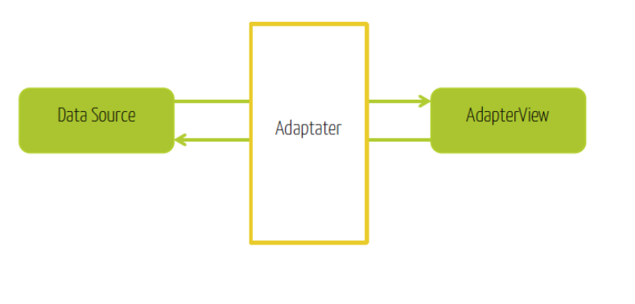
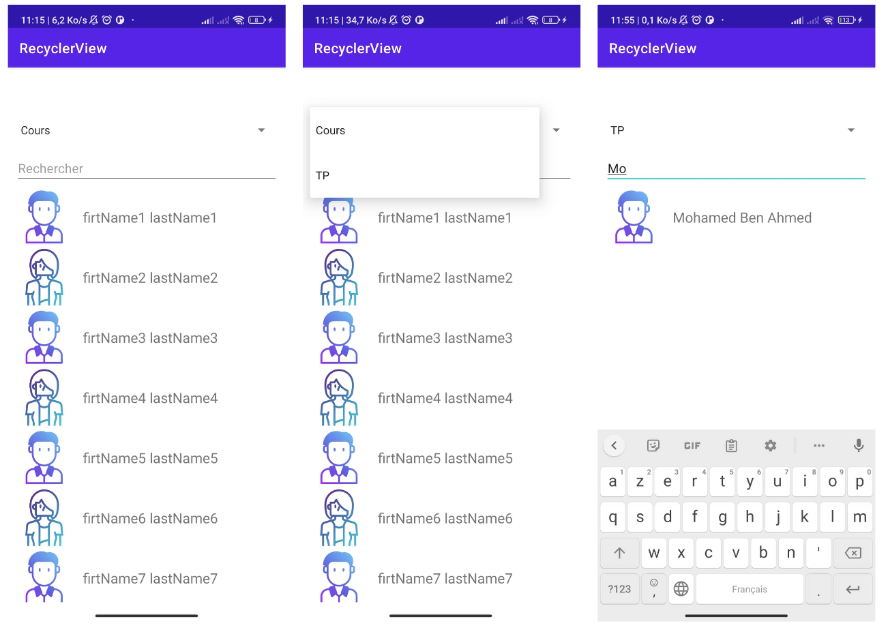
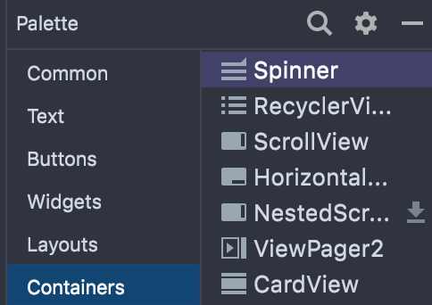
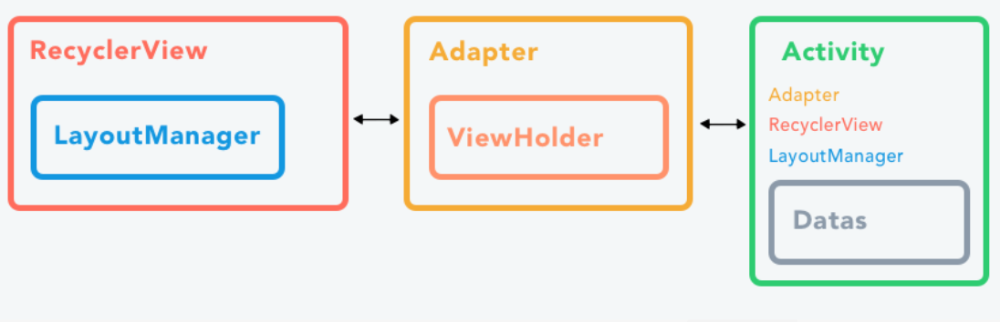

Éléments graphiques avancés - Adaptateurs et Listes
Objectifs du TP
- Dans ce TP nous allons appliquer la notion d’adaptateur via des exemples de listes.
Rappel
Adaptateurs & AdapterView
Un objet adaptateur agit comme un pont entre une vue (appelée AdapterView) et les données sous-jacentes de cette vue. Une AdapterView est une vue complexe qui contient plusieurs vues, et qui nécessite un adaptateur pour construire ses vues filles. Les AdapterViews les plus connues sont : ListView, GridView et Spinner. Un adaptateur permet de transformer les données d’un DataSource (un tableau ou un curseur) en widgets pour les insérer dans une AdapterView.

Les deux types d’adaptateurs les plus communs sont : ArrayAdapter et SimpleCursorAdapter:
ArrayAdapter:
Utiliser cet adaptateur quand votre source de données est un tableau. Par défaut, cet adaptateur crée une vue pour chaque élément du tableau en appelant la méthode toString de chaque élément, et en plaçant son contenu dans un objet TextView. Un adaptateur de type ArrayAdapter est créé comme suit :
Les arguments du constructeur sont :- Le contexte de l’application (représente en général l’activité dans laquelle la AdapterView est créée)
- Un layout représentant le type d’un élément de la liste : Ce layout android.R.layout.simple_list_item_1 est un layout prédéfini qui contient un TextView pour chaque élément du tableau
- Le tableau de chaînes de caractères représentant les données à insérer dans la liste. L’adaptateur créé sera ensuite associé à la AdapterView correspondante, en utilisant la méthode setAdapter.
Il est possible de représenter autre chose qu’un TextView pour un élément de la liste. Il suffit pour cela d’étendre la classe ArrayAdapter et de surcharger la méthode getView. Un exemple expliquant cela sera représenté plus loin dans l’énoncé.
SimpleCursorAdapter: Utiliser cet adaptateur quand les données sont issues d’un Cursor. Cette interface fournit un accès aléatoire en lecture/écriture au résultat fourni par une requête sur une base de données. Nous n’aborderons pas cet adaptateur dans ce document. Pour plus d’informations, consulter la documentation officielle d’Android : ici
Activité-1
Indiquer les composants graphiques Android qui interviennent dans cette IHM.
Activité-2
Construire cette IHM avec Android Studio. Lancer l’émulateur, et vérifier que le rendu correspond à ce qui est demandé.
Exercice
1. Objectif
L'objectif de ce TP est de réaliser une application simple, qui affiche la présence des étudiants dans plusieurs cours et recherche un étudiant par son nom ou son prénom. Le résultat qu’on désire avoir est le suivant : 
2. Spinner
- Dans votre layout, insérer un Spinner. Vous trouverez ce widget dans la catégorie Containers de votre palette.

On l’appellera spinner. Le code obtenu dans votre layout XML sera comme suit :
<Spinner
android:layout_width="match_parent"
android:id="@+id/spinner"
app:layout_constraintLeft_toLeftOf="parent"
app:layout_constraintRight_toRightOf="parent"
app:layout_constraintTop_toTopOf="parent"
android:layout_height="wrap_content">
</Spinner>
- Dans votre activity, déclarer un Spinner. Pour créer un objet qui sera initialisé au premier accès à celui-ci, on peut utiliser la méthode lazy.
- Dans la méthode onCreate(), indiquer dans un tableau la liste des matières qui vous seront proposées comme suggestions :
- Associer un adaptateur à ce widget, de type ArrayAdapter. Noter que le layout utilisé comme type pour un élément de la liste est un simple_dropdown_item_1line.
Pour gérer les clics sur un élement d'un spinner, on utilise la méthode 'onItemSelectedListener'. Il faut surchager les méthodes 'onItemSelected et 'onNothingSelected'.
spinner.onItemSelectedListener = object : AdapterView.OnItemSelectedListener {
override fun onItemSelected(adapterView: AdapterView<*>?, view: View?, position: Int, id: Long) {
}
override fun onNothingSelected(adapterView: AdapterView<*>?) {
}
}
- adapterView : L'AdapterView qui contient la vue sur laquelle le clic a été effectué. a été effectué.
- view : La vue.( l'item )
- i : La position de la vue dans la liste.
- id : L'identifiant de la vue.
Activité-1
Créer un Spinner. Au clic sur un élément de la liste, afficher un toast.
3. RecyclerView
Pour afficher des éléments dans un recyclerview, il faut définir :
- La source de données à afficher.
- Un RecyclerView pour la liste déroulante qui contient les éléments de la liste
- La ligne individuelle, dans un fichier xml à part.
- Un layoutManager RecyclerView.LayoutManager gère la disposition des éléments de la liste qu'il contient. Cette disposition peut être verticale, horizontale ou une grille.
- Un adaptateur RecyclerView.Adapter connecte vos données à RecyclerView. Il prépare les données dans un RecyclerView.ViewHolder.
- Un ViewHolder À l'intérieur de votre adaptateur, vous allez créer un ViewHolder qui contient les informations de vue pour afficher un élément de la liste.
Le schéma ci-dessous montre la relation entre les données, l'adaptateur, le ViewHolder et le layoutManager. 
Activité-2
- Ajouter un élément RecyclerView dans le fichier de layout xml au dessous du Spinner.
- Définir une classe Student qui represente un Etudiant defini par son nom, son prénom et son genre.
- Créer un fichier layout XML (student_item.xml) pour un élément de liste, qui contient une image et un Text à droite de l'image.
- Suiver les étapes indiquées dans le cours pour implémenter un adaptateur.
- Choisir des images qui represente une femme et un homme ici, les télécharger et les placer dans le dossier drawable.
- Faire le changement nécessaire dans la méthode onBindViewHolder pour afficher une image selon le genre de l'etudiant. Pour cela utiliser la méthode setImageResource(R.drawable.nom_de_limage)
- Dans votre Activity, connecter toutes les pièces pour afficher vos données.
- Faire les changements nécessaires au niveau du Spinner, pour afficher à chaque fois la liste des étudiants qui concerne une matière précise.
Pour filtrer la liste, il suffit d'implementer l'interface Filterable, au niveau de votre adaptateur et de surchager la méthode getFilter()
- Ajouter un nouveau tableau dans votre adaptateur comme suit :
var dataFilterList = ArrayList<Student>()
init {
// associer le tableau des données initiales
dataFilterList = data
}
- Implémenter l'interface Filterable et ajouter les lignes de codes suivantes :
override fun getFilter(): Filter {
return object : Filter(){
override fun performFiltering(constraint: CharSequence?): FilterResults {
val charSearch = constraint.toString()
if (charSearch.isEmpty()) {
dataFilterList = data
} else {
val resultList = ArrayList<Student>()
for (student in data) {
if (student.firtName.lowercase(Locale.ROOT)
.contains(charSearch.lowercase(Locale.ROOT))
) {
resultList.add(student)
}
}
dataFilterList = resultList
}
val filterResults = FilterResults()
filterResults.values = dataFilterList
return filterResults
}
override fun publishResults(constraint: CharSequence?, results: FilterResults?) {
dataFilterList = results?.values as ArrayList<Student>
notifyDataSetChanged()
}
}
}
Activité-3
Ajouter un Editext au dessus du RecyclerView et faire le travail necéssaire pour permettre la recherche d'un étudiant par nom.
Info
Utiliser la méthode addTextChangedListener avec l'interface TextWatcher de la même manière utilisée dans le Spinner.
Exercice 4 : Travail à rendre
Nous souhaitons que l'application permettera un enseignant de suivre l'état de présence des étudiants. Faire le travail necessaire pour qu'un ensignant peut :
- Voir l'etat de chaque étudiant ( Absent - Présent) ( Pensez à utiliser un checkbox )
- Changer l'etat d'un étudiant
- Filtrer la liste selon l'etat ( Absent - Présent)